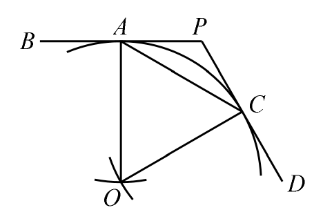

∠PCA＝30°，所以 PA＝PC。分别以 A、C 为圆心、AC 为半径画弧，选取与 P 位于 AC 两侧的交点 O。
作图步骤
△AOC 为等边三角形，∠OAC＝60°，加上 ∠CAP＝30° 得 OA⊥PA。同理 OC⊥PC，因此该劣弧满足两处相切。

PA＝PC＝2，OA＝OC＝2√3，四边形 OAPC 面积为 4√3。扇形 AOC 的圆心角为 60°，面积为 2π。所求面积为 4√3−2π。
∠PCA＝30°，所以 PA＝PC。分别以 A、C 为圆心、AC 为半径画弧，选取与 P 位于 AC 两侧的交点 O。
△AOC 为等边三角形，∠OAC＝60°，加上 ∠CAP＝30° 得 OA⊥PA。同理 OC⊥PC，因此该劣弧满足两处相切。

PA＝PC＝2，OA＝OC＝2√3，四边形 OAPC 面积为 4√3。扇形 AOC 的圆心角为 60°，面积为 2π。所求面积为 4√3−2π。